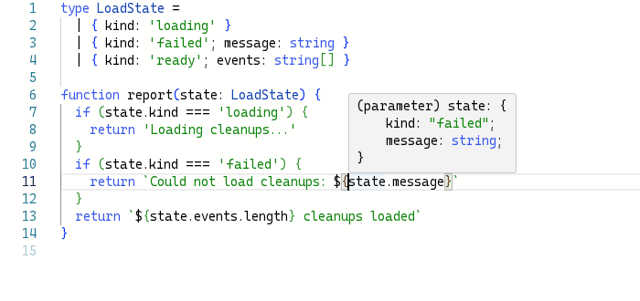

Session 2: Types, Inference and Shaping Data
How to teach Lessons 2.1 and 2.2: build the ts-lab workbench with the whole room, show what TypeScript infers and where it needs an annotation, why outside data is unknown until checked, then describe Shoreline Crew's data with interfaces, unions of literal types and a discriminated union, and handle every "maybe nothing" with if, ?? and ?. ; two labs, the first steps of both projects, every output real.
How to Use This Guide
- Same rhythm for both lessons: frame (one mental model) → live demo (you type, they follow) → guided lab (a kit lab: new practice, never the lesson's own project) → start the lesson's project. The rest of each project, the exercises, the quiz and the journal are homework.
- Module 2 is TypeScript on its own, in a workbench folder called
ts-labnext to the app. Lesson 2.1 creates it in the room, together, one command at a time; from then on every example goes intoscratch.tsand the rhythm is: save,npm run check, read,node scratch.tswhen it prints. The API and the dev server stay off today. - Type, do not paste. Every output below was produced by running the lesson's own snippet in a copy of
ts-labexactly as the lesson leaves it (TypeScript 7.0.2, Node 24, a learner's terminal), and where the lesson shows the same snippet the kit's output is the lesson's, word for word. Ask for a prediction before every run. - The lessons are the reference: keep
lesson_03.htmlandlesson_04.htmlopen in tabs for the tables and diagrams. Labs live inlabs/module-02/(learners have the kit'slabs/folder in their course foldershoreline/);starter/folders andTASKS.mdare handouts,solution/folders are yours until the session is over. - Teal blocks are hands-on, amber blocks are watch-outs. Lesson codes (2.1, 2.2) match the course site.
Two lessons, about fifteen new error codes, and two full-page TypeScript listings to type. A room that tries to memorize codes drowns by the break. The lessons' answer, and yours: an error is a question, not a verdict. Read every message once from the top (file:line:column, the code, the message, the indented follow-up) and say the question out loud. Keep a running board list "code → the question it asks" and add one line per demo step; it is the cheat sheet learners copy into their workbook. Typing speed is the other risk: the projects' listings go home, and in class learners type the first part of each and copy the rest from the lesson page if they fall behind.
Before the Session
- ☐ Network: Lesson 2.1 runs
npm install --save-dev --save-exact typescript@7.0.2in a new folder (two packages). On venue Wi-Fi that is fine; if the network is unreliable, run the same command once on your machine the day before so your npm cache can serve it, and putlesson-03-end.zipfrom the course downloads on a USB stick (itsts-lab/withnpm ciis the finished workbench). - ☐ Run the kit check once:
python3 labs/check_labs.py module-02from this kit's folder (9 runs, about 10 seconds: the starters fail as shipped, the solutions pass their tests and the type check, and Lab 2.1's extra run shows whatanylets through). Neither lab needs the API. - ☐ Projector machine: VS Code on a
shorelinefolder at a large font, one terminal ints-labat 18 pt or larger; hover pop-ups readable from the back row (Settings › Editor: Hover › Delay, about 300 ms, so they appear while you talk).lesson_03.htmlandlesson_04.htmlin browser tabs. Delete your ownts-labbefore class so you build it live with the room. - ☐ Board, before learners arrive: "annotate the edges · let inference fill the middle · outside data is unknown until checked"; an empty two-column table "code | the question it asks" (TS2322 first); the sign-in sheet with tick boxes (S / M / L / XL) for Lesson 2.2.
- ☐ Bring-list check from Session 1: anyone still NOT READY runs the environment check during the warm-up; Session 2 needs only Node, VS Code, the course folder and the network.
- ☐ Print or share: the workbook (warm-up, worked examples, lab tables, predict-then-check, self-check), sticky notes for the exit ticket.
| Symptom | Cause | Fix |
|---|---|---|
Need to install the following packages: tsc@2.0.4 | npx tsc run outside ts-lab (no TypeScript there) | Answer n, cd ts-lab, run it again (Lesson 2.1's warning box). |
error TS5112: tsconfig.json is present but will not be loaded… | npx tsc scratch.ts with a file name | npm run check (no file name): it uses the project's settings. |
npm run check reports errors in scratch.ts during the project | The last experiment is still in the scratch file | Fix it or empty the file; the check reads every .ts file in the folder. |
SyntaxError: Cannot use import statement / require is not defined | "type" still "commonjs" in package.json | The second of the two edits: "type": "module". |
The editor shows no error but npm run check does (or the reverse) | File not saved, or VS Code opened on one file instead of the folder | Save; open the shoreline folder; Command Palette › TypeScript: Restart TS Server. The terminal is the referee. |
ERR_UNSUPPORTED_TYPESCRIPT_SYNTAX: TypeScript enum is not supported in strip-only mode | An enum pasted from an old tutorial | A union of literal types (Lesson 2.2, Common Mistakes). |
Session 2 Agenda (3 hours)
| Clock | Minutes | Segment | What happens |
|---|---|---|---|
| 0:00 | 15 | Warm-up: Session 1 follow-up and retrieval | Environment check results for anyone who was NOT READY; four retrieval questions on running versus checking; today's map. |
| 0:15 | 10 | 2.1 Frame and mental model | The workbench in the supply shed, the first entry in the logbook: TypeScript infers, you annotate the edges. |
| 0:25 | 15 | 2.1 Build ts-lab together | Everyone, one command at a time: mkdir ts-lab, npm init -y, TypeScript 7.0.2, npx tsc --init, the two edits, the first run. |
| 0:40 | 15 | 2.1 Live demo | Inference and literal types, TS7006, an empty array, null, arrays, any versus unknown, TS18047. |
| 0:55 | 15 | 2.1 Guided lab | labs/module-02/l2_1-types-and-inference/starter: Tasks 1 and 2 in pairs (annotate the edges, a capacity from outside). |
| 1:10 | 10 | 2.1 Start the lesson project | types.ts Steps 1 to 3: the crew's numbers, two functions, a value from outside. |
| 1:20 | 10 | Break | Every ts-lab passes npm run check before Lesson 2.2 starts. Start npm install in Lab 2.2's starter. |
| 1:30 | 10 | 2.2 Frame and mental model | The sign-in sheet and its tick boxes: object types, unions of literal types, narrowing. |
| 1:40 | 20 | 2.2 Live demo | Three object errors, optional, a literal union, the widening trap, a discriminated union, the null toolkit and ! . |
| 2:00 | 20 | 2.2 Guided lab | labs/module-02/l2_2-shaping-data/starter: Tasks 1 and 2 in pairs (the gear interface, every case handled). |
| 2:20 | 30 | 2.2 Start the lesson project | shapes.ts Steps 1 to 3 (types, sample data, functions), then one break from Step 4 together. |
| 2:50 | 10 | Wrap-up | Exit ticket (3 questions), homework, bring list for Session 3. |
| Total | 180 | Ends at 3:00. |
In the room. The lesson pages estimate 145 + 150 = 295 minutes for a learner working alone, exercises included; after the warm-up, the break and the wrap-up the room has 145. Lesson 2.1 gets 65 of them (with ts-lab built together), Lesson 2.2 gets 80. Each lesson keeps the full shape: model, demo, lab, the first steps of its project.
Goes home (about 2 to 3 hours). Lesson 2.1: the project's Step 4 (break it four ways, with the any-and-"twelve" NaN) and Step 5 (inference in App.tsx, npx tsc -b, npm run build), Exercises 1 and 2 (Exercise 3 is a stretch), the quiz, the journal, then delete scratch.ts. Lesson 2.2: the rest of Step 4 and Step 5 (read the real contract in shoreline-api/core/types.ts), Exercises 1 and 2, the quiz, the journal, then delete scratch.ts again. Both labs' remaining tasks.
Protect, in this order: every learner leaves with a working ts-lab (npm run check silent); the any-versus-unknown step; the 2.2 discriminated union; the widening trap. Cut first: the 2.1 null-and-arrays step and the 2.2 optional step (both are one screen in the lesson), then the guided labs' second task, then the 2.2 project's break-it step.
Opening Segment
Warm-up: Session 1 Follow-up and Retrieval
15 min| 5m | Session 1 follow-up: anyone NOT READY last time runs the environment check now (with the API running) and reads you the last line |
| 7m | Four retrieval questions (workbook Warm-up), pairs, then the room |
| 3m | Today's map: Module 2 is TypeScript on its own, in a workbench; Module 3 brings it back into React |
node spots.tsprinted NaN;npx tsc --noEmit spots.tsprinted TS2551. Why the difference? Answer: Node removes the types and runs what is left; tsc reads the types and checks them. Running is not checking.npx tsc -bprints nothing at all in shoreline-hq. Good or bad? Answer: Good: tsc speaks only when something is wrong.npm run buildprintederror TS2322. Didvite buildrun? Answer: No: the script istsc -b && vite build, and&&stops at the first failure.- Which tool flags an unused constant as a warning, and which one makes it an error? Answer: oxlint (
npm run lint) warns; tsc reports TS6133 because the app's tsconfig sets noUnusedLocals.
- Do not reopen the install clinic. A machine that is still NOT READY pairs with a neighbor for today: Session 2 needs Node and VS Code only, and a neighbor's laptop works for everything. Fix the setup at the break.
- Learners who already write TypeScript at work often annotate everything. Give them a job: in today's demos, they predict the hover before you show it.
Lesson Plans
Types and Inference
65 min- Set up a TypeScript workbench (ts-lab) with its own package.json, tsconfig.json and a check script
- Predict the type TypeScript infers for a value, including the difference between let and const
- Decide when to write a type annotation: parameters, values that arrive later, and empty arrays
- Use the basic types (string, number, boolean, null, undefined) and typed arrays
- Explain why unknown is safer than any for data from outside your program, and check an unknown value with typeof
- Read the errors TS2322, TS2345, TS7006, TS18046 and TS18047 and know what each one is asking you to fix
| 10m | Frame: the workbench in the supply shed; inference; the first entry in the logbook |
| 15m | Build ts-lab together: five commands, two edits, the first run |
| 15m | Live demo: inference, the edges, null and arrays, any versus unknown, possibly null |
| 15m | Guided lab: l2_1-types-and-inference/starter, Tasks 1 and 2 in pairs |
| 10m | Start the lesson project: types.ts Steps 1 to 3 |
"Before a new volunteer ties a knot on the boat, an organizer shows it on the workbench in the supply shed, where a wrong knot costs nothing. ts-lab is that bench: for four lessons we learn TypeScript there, on its own, and from Lesson 2.4 it goes into the boat, Shoreline Crew HQ."
Then the second picture: "When the crew starts a new logbook column, the first entry decides what it is for: write 21 at the top and everyone knows it is a count of people. TypeScript reads your first value the same way, and after that a word in the count column gets flagged." Write the rule under it: annotate the edges (parameters, late values, empty arrays, outside data) and let inference fill the middle.
In shoreline (not in shoreline-api or shoreline-hq: read the prompt first), one command at a time, waiting until every hand is up:
mkdir ts-lab cd ts-lab npm init -y npm install --save-dev --save-exact typescript@7.0.2 npx tsc --init
What learners see (the lesson's own cards; the path and the time are theirs):
Wrote to /Users/you/shoreline/ts-lab/package.json:
{
"name": "ts-lab",
"version": "1.0.0",
"description": "",
"main": "index.js",
"scripts": {
"test": "echo \"Error: no test specified\" && exit 1"
},
"keywords": [],
"author": "",
"license": "ISC",
"type": "commonjs"
}
added 2 packages, and audited 3 packages in 550ms
found 0 vulnerabilities
Created a new tsconfig.json
You can learn more at https://aka.ms/tsconfig- The two edits: in
package.jsonthe"test"placeholder becomes"check": "tsc --noEmit"and"type"becomes"module"; intsconfig.jsondelete the "Stricter Typechecking Options" block (two settings: the lab then checks like the app; Lesson 2.4 brings one back). The result:
{
"name": "ts-lab",
"version": "1.0.0",
"description": "",
"main": "index.js",
"scripts": {
"check": "tsc --noEmit"
},
"keywords": [],
"author": "",
"license": "ISC",
"type": "module",
"devDependencies": {
"typescript": "7.0.2"
}
}Then the first run, in scratch.ts:
const crewName = 'Shoreline Crew' console.log(`${crewName}: the lab is ready`)
Shoreline Crew: the lab is ready > ts-lab@1.0.0 check > tsc --noEmit
"Two > lines and silence: that is a clean check. That is the rhythm of this module: run it, check it, read what the checker says." Anyone offered tsc@2.0.4 ran npx tsc outside ts-lab: answer n.
In scratch.ts, replacing its contents each time, as the lesson does. Outputs from a copy of ts-lab exactly as the lesson leaves it; where the lesson shows the same snippet the output is the lesson's.
- Inference and the logbook (3m). Type the lesson's five lines in
scratch.tsand hover each name before anyone guesses aloud:letgivesnumber,constgives the literal18and"Shoreline Crew", the comparison givesboolean. Then add the line the lesson adds and check:let volunteers = 21 const crewName = 'Shoreline Crew' const capacity = 18 let spotsTaken = 12 const isFull = spotsTaken >= capacity volunteers = 'twenty-two'
> ts-lab@1.0.0 check > tsc --noEmit scratch.ts:7:1 - error TS2322: Type 'string' is not assignable to type 'number'. 7 volunteers = 'twenty-two' ~~~~~~~~~~ Found 1 error in scratch.ts:7
"TypeScript decided on line 1 and holds the file to it: the first entry in the logbook. TS2322 is the error you will see most in your career." - The edges: parameters (3m). "Where can TypeScript NOT guess?" Write
spotsLeftwithout types:function spotsLeft(capacity, taken) { return capacity - taken }
> ts-lab@1.0.0 check > tsc --noEmit scratch.ts:1:20 - error TS7006: Parameter 'capacity' implicitly has an 'any' type. 1 function spotsLeft(capacity, taken) { ~~~~~~~~ scratch.ts:1:30 - error TS7006: Parameter 'taken' implicitly has an 'any' type. 1 function spotsLeft(capacity, taken) { ~~~~~ Found 2 errors in the same file, starting at: scratch.ts:1Add: numberto both, hover the function name: the return typenumberis inferred. Then the lesson's three-edges file: - A late value and an empty array (2m).
// 1. Parameters: always annotate (TypeScript cannot guess what callers will pass) function spotsLeft(capacity: number, taken: number) { return capacity - taken } // 2. A variable that gets its value later let meetingPoint: string meetingPoint = 'Top of the Cove Lane stairs' // 3. An empty array you fill later const bagCounts: number[] = [] bagCounts.push(14, 9, 22) console.log(spotsLeft(18, 12), meetingPoint, bagCounts)
6 Top of the Cove Lane stairs [ 14, 9, 22 ]
npm run checkis silent. Write on the board: annotate the edges, let inference fill the middle. - null is its own type, and arrays (2m). Two quick ones:
leadName = nullon a string, andsiteIds.push(42)on an inferredstring[].scratch.ts:6:1 - error TS2322: Type 'null' is not assignable to type 'string'. Found 1 error in scratch.ts:6 scratch.ts:5:14 - error TS2345: Argument of type 'number' is not assignable to parameter of type 'string'. Found 1 error in scratch.ts:5
TS2345 is TS2322's sibling for function calls.Array<string>=string[]; a mixed array is(string | number)[]: the|is Lesson 2.2. - any lets a crash through (3m). The tagLine typo with
JSON.parse. Ask for a prediction of both commands first.const text = '{"name": "Shoreline Crew", "tagline": "Many hands, cleaner sands."}' const meta = JSON.parse(text) console.log(meta.tagLine.toUpperCase())
console.log(meta.tagLine.toUpperCase()) ^ TypeError: Cannot read properties of undefined (reading 'toUpperCase')npm run checkprinted only its two>lines:JSON.parsereturnsany, and anything read from ananyisany. Now one word changes: - unknown asks first (2m).
const meta: unknown = JSON.parse(text)
> ts-lab@1.0.0 check > tsc --noEmit scratch.ts:4:13 - error TS18046: 'meta' is of type 'unknown'. 4 console.log(meta.tagLine.toUpperCase()) ~~~~ Found 1 error in scratch.ts:4Then thetypeofversion printsMANY HANDS, CLEANER SANDS.and the check is silent. Draw the lesson's diagram: outside data → unknown → typeof → a real type. Outside data is unknown until checked. - Possibly null (2m).
sessionStorage.getItem(check only: Node has no sessionStorage).const session = sessionStorage.getItem('shoreline-hq-session') console.log(session.length)
> ts-lab@1.0.0 check > tsc --noEmit scratch.ts:3:13 - error TS18047: 'session' is possibly 'null'. 3 console.log(session.length) ~~~~~~~ Found 1 error in scratch.ts:3Hoversession:string | null. The fix is anif (session !== null). Close with the lesson's table of five codes and "an error is a question, not a verdict".

- Annotating everything.
const capacity: number = 18is noise and throws away the literal type. Coach: "Hover first. Did TypeScript already know?" (Self-check Q1, Q3.) - Silencing an error with
any. Coach with the smoke alarm: "What question was it asking? Answer it withunknownand a check." (Self-check Q2, Q4; Lab 2.1's extra run.) - Running instead of checking.
node scratch.tsprints and they move on. Coach: "Which of the two commands checks?" Makenpm run checkthe first command after every save.
Folder: labs/module-02/l2_1-types-and-inference/starter/ (task sheet labs/module-02/l2_1-types-and-inference/TASKS.md); your reference is labs/module-02/l2_1-types-and-inference/solution/. New practice on the lesson's ideas: annotate exactly the edges in a file Node runs happily (numbers.ts), read a capacity from outside as unknown (capacityFrom), and answer two "maybe nothing" questions (welcome, firstOver). Needs npm install once in starter/ (TypeScript and Node's types).
- Run it as shipped (3m).
npm test: four tests fail (twoTODO 2, twoTypeErrors);npm run check: nine errors in three files. Read only the first line of each:
lab.test.ts:43:3 - error TS2578: Unused '@ts-expect-error' directive. numbers.ts:6:29 - error TS7006: Parameter 'totalBags' implicitly has an 'any' type. numbers.ts:6:40 - error TS7006: Parameter 'cleanups' implicitly has an 'any' type. numbers.ts:10:26 - error TS7006: Parameter 'siteName' implicitly has an 'any' type. numbers.ts:10:36 - error TS7006: Parameter 'bags' implicitly has an 'any' type. numbers.ts:16:15 - error TS2345: Argument of type '12.5' is not assignable to parameter of type 'never'. numbers.ts:19:12 - error TS7005: Variable 'leadOrganizer' implicitly has an 'any' type. outside.ts:13:27 - error TS18047: 'savedName' is possibly 'null'. outside.ts:19:41 - error TS18048: 'heavy' is possibly 'undefined'. Found 9 errors in 3 files.
- Task 1 in pairs (6m): four TS7006 on the parameters,
leadOrganizerTS7005 (a value that arrives later), and the empty array: an exported[]isnever[], sopush(12.5)getsparameter of type 'never'. The fix isnumber[]on the array. Circulate for annotations on the return types (not needed: hover). - Task 2 (5m): first the tempting
return JSON.parse(json): the check is silent and the tests catch it (the kit's extra run endsℹ fail 3). Thenconst value: unknown = JSON.parse(json)andtypeof value === 'number'. - Debrief (1m): "Which annotations did you NOT need?" (the return types). The solution's runs end:
ℹ tests 6 ℹ pass 6 ℹ fail 0 (no output: no errors)
- Fast finishers: Task 3 (TS18047, TS18048: an
ifeach), then the stretch (Number.isInteger).
The lesson project is Type the Crew's Numbers, five steps. In the room: Steps 1 to 3 (10 minutes): type types.ts, predict each hover before checking it, then run it.
const crewName = 'Shoreline Crew' const siteIds = [ 'pelican-point', 'driftwood-cove', 'sandpiper-flats', 'north-jetty', 'otter-creek', 'long-strand', ] const organizers = 3 let volunteers = 21 // Bags collected at the last three cleanups: empty at first, so it needs an annotation const bagCounts: number[] = [] bagCounts.push(14, 9, 22)
Shoreline Crew: 25 people, 6 sites Bags at the last three cleanups: 45 Tide Pool Morning Cleanup: 3 spots left
- Done in the room =
node types.tsprints the three lines andnpm run checkis silent. Ask: "Which name needed an annotation, and why?" (bagCounts: an empty array). - Goes home: Step 4 (four breaks, then
anyand"twelve"for a silent NaN) and Step 5 (remove the two: stringannotations inshoreline-hq/src/App.tsx, thennpx tsc -bandnpm run build).
Ask these out loud during the demo and the lab:
- Why does
const capacity = 18hover as18andlet spotsTaken = 12asnumber? Answer: a const can never change, so its type is the exact value; a let may become any other number. - Name the places where you must annotate. Answer: parameters, a variable that gets its value later, an empty array, data from outside (as
unknown). - What is the difference between
anyandunknown? Answer: both accept any value;unknownlets you do nothing until you check it,anychecks nothing, ever. - What does
string | nullfromgetItemask of you? Answer: handle the null case (anif) before using it as a string.
Workbook self-check, items Q1 to Q6 (learners do them at the end of the block or at home).
Answers: Q1 B) let volunteers: number and const capacity: 18; Q2 The check is silent; Node prints 6; Q3 D) function spotsLeft(capacity, taken) { ... }; Q4 B) Prove what meta is (for example with typeof) before you use it; Q5 C) if (big !== undefined) { console.log(big.length) }; Q6 tsc stops with error TS5112 (tsconfig.json is present but will not be loaded if files are specified on the command line); run npm run check (tsc --noEmit with no file name). Full set with explanations in the Answer Key.
Support: learners new to types keep the board table "code → question" open and say the question aloud before touching the code; pair them as the typist with a partner who reads the error. Anyone whose npm install failed copies ts-lab from lesson-03-end (USB stick) and runs npm ci.
Stretch: Lab 2.1 Task 3 and its stretch; the lesson's Exercise 3 (describe(value: unknown)) and the Bonus Challenge (the const probe: null = … trick that makes TS2322 print an inferred type).
Shaping Data
80 min- Describe objects with object types and interfaces, including nested objects, and read the errors for missing, misspelled and extra properties
- Choose between interface and type, and build one shape on another with extends or &
- Mark properties optional (?) or read-only (readonly) and say what each promise means for the code that uses them
- Model "one of these" with unions and literal types, such as a cleanup's four statuses
- Narrow a union with typeof, equality, in and a discriminant property, and check an unknown value that should be an object
- Handle null and undefined with an if, ?? and ?., and know when the ! assertion is honest
| 10m | Frame: the sign-in sheet (object types) and its tick boxes (unions of literal types) |
| 20m | Live demo: three object errors, optional, a literal union, the widening trap, a discriminated union, the null toolkit |
| 20m | Guided lab: l2_2-shaping-data/starter, Tasks 1 and 2 in pairs |
| 30m | Start the lesson project: shapes.ts Steps 1 to 3, then one break together |
"At every cleanup the crew hands out a sign-in sheet with printed columns: name, phone, shirt size. A sheet with a missing column or a scribbled extra one stands out at once. An object type is that printed sheet for your data, and TypeScript checks each object against it."
Then the tick boxes: "Shirt size: S / M / L / XL with four boxes is a union of literal types. A free-text line is string, and someone will write medium-ish." Draw the LoadState chain from the lesson (kind is loading? failed? otherwise ready) and say: each check removes a member; by the last line only one is left.
Same rhythm as 2.1: each snippet into scratch.ts (learners re-create it: they deleted it at the end of 2.1), npm run check, then node scratch.ts when it prints. Outputs from a copy of ts-lab as Lesson 2.2 leaves it; every one equals the lesson's card.
- Three object errors (3m). The lesson's
Sitewith a misspelled and an extra property:interface Site { id: string name: string town: string accessible: boolean } const cove: Site = { id: 'driftwood-cove', name: 'Driftwood Cove', town: 'Port Marisol', acessible: false, } const jetty: Site = { id: 'north-jetty', name: 'North Jetty', town: 'Calder Bay', accessible: false, parking: 'Harbor lot B', }
> ts-lab@1.0.0 check > tsc --noEmit scratch.ts:12:3 - error TS2561: Object literal may only specify known properties, but 'acessible' does not exist in type 'Site'. Did you mean to write 'accessible'? 12 acessible: false, ~~~~~~~~~ scratch.ts:20:3 - error TS2353: Object literal may only specify known properties, and 'parking' does not exist in type 'Site'. 20 parking: 'Harbor lot B', ~~~~~~~ Found 2 errors in the same file, starting at: scratch.ts:12TS2561 suggests the fix; TS2353 is the same complaint with no suggestion. The third you know: TS2741, a missing property (it comes back in the project). Typecove.and let the room see the suggestions: that is the everyday payoff. - Optional means "maybe undefined" (2m).
checkInCode?: string, and an object that clearly has one:scratch.ts:15:13 - error TS18048: 'forOrganizers.checkInCode' is possibly 'undefined'. Found 1 error in scratch.ts:15
"TypeScript goes by the type, not today's value: the next one may come from the API for a volunteer." - Tick boxes: a literal union (2m).
scratch.ts:9:46 - error TS2322: Type '"concrete"' is not assignable to type 'Terrain'. scratch.ts:5:3 - The expected type comes from property 'terrain' which is declared here on type 'Site' Found 1 error in scratch.ts:9
The follow-up says where the expectation came from. Typeterrain: 'and show the four suggestions. - The widening trap (4m). This one confuses everybody once. Build the object first, type it later:
type Terrain = 'sand' | 'rocky' | 'marsh' | 'mixed' interface Site { name: string terrain: Terrain } function describeSite(site: Site) { return `${site.name} (${site.terrain})` } const flats = { name: 'Sandpiper Flats', terrain: 'marsh' } console.log(describeSite(flats))
> ts-lab@1.0.0 check > tsc --noEmit scratch.ts:13:26 - error TS2345: Argument of type '{ name: string; terrain: string; }' is not assignable to parameter of type 'Site'. Types of property 'terrain' are incompatible. Type 'string' is not assignable to type 'Terrain'. 13 console.log(describeSite(flats)) ~~~~~ Found 1 error in scratch.ts:13Read it from the bottom:terrainwas inferred asstring(properties of a const object can change). Fix where it is created,const flats: Site = …, and it printsSandpiper Flats (marsh). - A discriminated union (4m). The three situations of a loading screen; use the events without checking first:
type LoadState = | { kind: 'loading' } | { kind: 'failed'; message: string } | { kind: 'ready'; events: string[] } function report(state: LoadState) { return `${state.events.length} cleanups loaded` }
> ts-lab@1.0.0 check > tsc --noEmit scratch.ts:7:19 - error TS2339: Property 'events' does not exist on type 'LoadState'. Property 'events' does not exist on type '{ kind: "loading"; }'. 7 return `${state.events.length} cleanups loaded` ~~~~~~ Found 1 error in scratch.ts:7Then the version with twokindchecks prints both lines; hoverstateinsideif (state.kind === 'failed')(the lesson's screenshot below). "Lesson 3.3 lets this decide what a component draws." - The null toolkit, and why not || (3m). The lesson's two snippets, run:
Hannah Becker has no phone on file no phone on file undefined No Pelican site in the list unknown | 0 no note |
if,??,?.(then??). Zero spots taken is a real number;||turned it into "unknown". Then the!onfindfor a pier that is not in the list: the check is silent and Node crashes. The honest!is in main.tsx: the root element is in our own index.html.

- Building an object first and typing it later. The three-level TS2345 far from the cause. Coach: "Read it from the bottom. Where was the object created? Say what it is there." (The widening step, self-check Q12's neighbor, predict P3.)
||for missing. Coach: "Is 0 a missing value here?" Use??and compare withnullexplicitly (Q9; Lab 2.2'sstockLine).!to make "possibly undefined" go away. Coach: "Who guarantees it is there: your own project, or the data?" (Q10.)
Folder: labs/module-02/l2_2-shaping-data/starter/ with labs/module-02/l2_2-shaping-data/TASKS.md; your reference is labs/module-02/l2_2-shaping-data/solution/. New practice on the lesson's ideas with the crew's lending shed: a GearItem interface with a literal union, an optional size and a nullable holder (checked by three @ts-expect-error lines in the test file: the check fails until the types are precise), every case handled with ??, and a three-member discriminated union. Needs npm install once (same packages as Lab 2.1: quick).
- Run it as shipped (2m).
npm test: four failures;npm run check:
gear.ts:39:31 - error TS2339: Property 'who' does not exist on type 'Checkout'. gear.ts:39:53 - error TS2339: Property 'since' does not exist on type 'Checkout'. lab.test.ts:6:41 - error TS2339: Property 'id' does not exist on type 'GearItem'. lab.test.ts:7:42 - error TS2339: Property 'id' does not exist on type 'GearItem'. lab.test.ts:37:1 - error TS2578: Unused '@ts-expect-error' directive. lab.test.ts:39:1 - error TS2578: Unused '@ts-expect-error' directive. Found 6 errors in 2 files.
- Task 1 in pairs (8m):
GearKindas four words,size?: 'S' | 'M' | 'L',checkedOutTo: string | null. Circulate forsize?: string(the XL line then passes, so its@ts-expect-erroris "unused") and forcheckedOutTo?: string(null is not undefined: the list stops type-checking). - Task 2 (8m):
holderandsizeLabelwith??;stockLinealready runs but printsnot counted yetfor 0: one character to change (||→??). - Debrief (2m): "Which
@ts-expect-errorline tested the optional size, and why does reading it as astringfail?" The solution's runs end:
ℹ tests 5 ℹ pass 5 ℹ fail 0
- Fast finishers: Task 3 (narrow on
kind), then the stretch (kindFrom(value: unknown)).
The lesson project is Draft the Crew's Data Shapes, five steps in ts-lab/shapes.ts. In the room: Steps 1 to 3 (types, sample data, functions; about 25 minutes, typing the types and copying the longer data block from the page if needed), then one break from Step 4 together (5 minutes). The types learners type first:
// Shoreline Crew data shapes (Lesson 2.2): a first draft of the API's types // Unions of literal types: exactly one of these words type Terrain = 'sand' | 'rocky' | 'marsh' | 'mixed' type EventStatus = 'draft' | 'scheduled' | 'completed' | 'cancelled' interface Site { id: string name: string town: string terrain: Terrain accessible: boolean image: { url: string; alt: string; width: number; height: number } } interface CleanupEvent { id: string title: string siteId: string status: EventStatus startTime: string capacity: number spotsTaken: number } // An event with its site, as the API sends one event; organizers also get the check-in code interface CleanupEventDetail extends CleanupEvent { site: Site checkInCode?: string } interface Volunteer { id: string name: string phone: string | null } // What a screen can be doing: each member has its own "kind" type LoadState = | { kind: 'loading' } | { kind: 'failed'; message: string } | { kind: 'ready'; events: CleanupEvent[] }
Done when it prints the lesson's eight lines:
Weekend Cove Cleanup at Driftwood Cove: Scheduled, Full: join the waiting list Harbor Kayak Cleanup at Unknown site: Draft (organizers only), 8 spots left Driftwood Cove is mixed; Check-in code: shown to organizers only Luis Romero: (831) 555-0102 Hannah Becker: no phone on file Loading cleanups... Could not load cleanups: the API did not answer 2 cleanups loaded
Then together, Step 4's third break (delete the failed check in report): two members left, and the message names both.
shapes.ts:122:19 - error TS2339: Property 'events' does not exist on type '{ kind: "failed"; message: string; } | { kind: "ready"; events: CleanupEvent[]; }'.
Found 1 error in shapes.ts:122
shapes.ts:122:19 - error TS2339: Property 'events' does not exist on type '{ kind: "failed"; message: string; } | { kind: "ready"; events: CleanupEvent[]; }'.- Goes home: the other three breaks (TS2322
'beach', TS2741 a missing title, TS2532 afindwithout?.) and Step 5: readshoreline-api/core/types.ts, the API's real contract, and note two differences from the draft.

Ask these out loud during the demo, the lab and the project:
- When do you use
interface, whentype? Answer: the course's convention: interface for object shapes, type for unions and everything else. - What is the type of an optional
checkInCode?: stringwhen you read it? Answer:string | undefined. - Why did
const flats = { terrain: 'marsh' }fail as aSite? Answer: its property was inferred asstring; annotate the object where it is created. - Which three tools handle "maybe nothing", and which one is a promise? Answer:
if,??,?.;!is a promise TypeScript cannot check.
Workbook self-check, items Q7 to Q12 (learners do them at the end of the block or at home).
Answers: Q7 B) Only type can name a union such as 'draft' | 'scheduled'; Q8 Yes, the check is silent; it prints offline; Q9 D) unknown 0; Q10 A) document.getElementById('root')! in main.tsx, where index.html in the same project has the element; Q11 C) The discriminant: a shared property with a different literal in each member; Q12 A) if (typeof capacity === 'number'), and call it inside. Full set with explanations in the Answer Key.
Support: write one cleanup on the board twice, as the JSON the API sends and as the interface, line by line; learners who are behind on typing copy Step 2's data block from the page and type only the types and functions. For narrowing, have them hover inside each branch and read the narrowed type aloud.
Stretch: Lab 2.2 Task 3 and the stretch; the lesson's Exercise 3 (siteNameFrom(value: unknown)) and the Bonus Challenge (remove a case and watch the inferred return type gain undefined: Lesson 2.3's TS2366 answers it).
Closing
Put the three questions on the slide. Sort the answers into "got it" and "not yet" before Session 3: question 2 tells you how much of Session 3's warm-up goes to unknown.
- Name three places where you write a type annotation. Answer: function parameters, a variable that gets its value later, an empty array (and data from outside, as
unknown). JSON.parsereturnsany. Why does the course writeconst value: unknown = JSON.parse(text)? Answer:unknownmakes the check ask what the value is before you use it;anylets every mistake through to a crash or a NaN.- Write a type for a screen that is loading, failed (with a message) or ready (with events). Answer:
type LoadState = { kind: 'loading' } | { kind: 'failed'; message: string } | { kind: 'ready'; events: CleanupEvent[] }.
- Finish both lesson projects. 2.1: Step 4 (four breaks, then the any-and-"twelve" NaN) and Step 5 (inference in App.tsx,
npx tsc -b,npm run build). 2.2: Steps 3 to 5 (the four breaks, then the real contract inshoreline-api/core/types.ts). - Lesson exercises. 2.1 and 2.2: Exercises 1 and 2 each (part of the lessons' time); Exercise 3 of each is a stretch. Delete
scratch.tsat the end, as both lessons ask. - Both Quick Quizzes on the lesson pages (five questions each; answers in the Answer Key).
- Labs: Lab 2.1 Task 3 (and the stretch); Lab 2.2 Task 3 (and the stretch).
- Journal: both entries (2.1: any versus unknown with the "twelve" experiment; 2.2: a bug you have seen and the type that would have caught it).
- Before the Next Lesson:
npm run checkin ts-lab silent withtypes.tsandshapes.ts, noscratch.ts;npm run buildin shoreline-hq ends with "built in".
- The course folder with
ts-lab(types.ts,shapes.ts, a silentnpm run check) andshoreline-hq(App.tsx without the two: stringannotations). - Session 3 adds
functions.tsto ts-lab (Lesson 2.3), then brings the API's types into the app and fetches real cleanups (Lesson 2.4): the API (node server.ts) and the dev server run in the second half. No new installs. - The notes from both projects' Step 4 (codes and questions) and the two differences found in Step 5.
If You Run Long or Short
- Protect: a working ts-lab for every learner; any versus unknown; the discriminated union; the widening trap.
- Cut first (saves 4m): the 2.1 "null and arrays" step and the 2.2 optional step (one screen each in the lessons).
- Cut second (saves 10m): the guided labs' second tasks (they go home).
- Cut third (saves 5m): the 2.2 project's break together; learners do all four at home.
- Lesson 2.1's Exercise 1 live: five names, the room predicts each hover, you reveal (
mixedis(string | number)[]). - Lesson 2.2's
enumcommon mistake: paste the old tutorial'senum Status { Draft, Scheduled },npm run checkaccepts it,noderefuses (strip-only mode). - Lab 2.2's stretch together:
kindFrom(value: unknown), narrowing withtypeofthen equality.